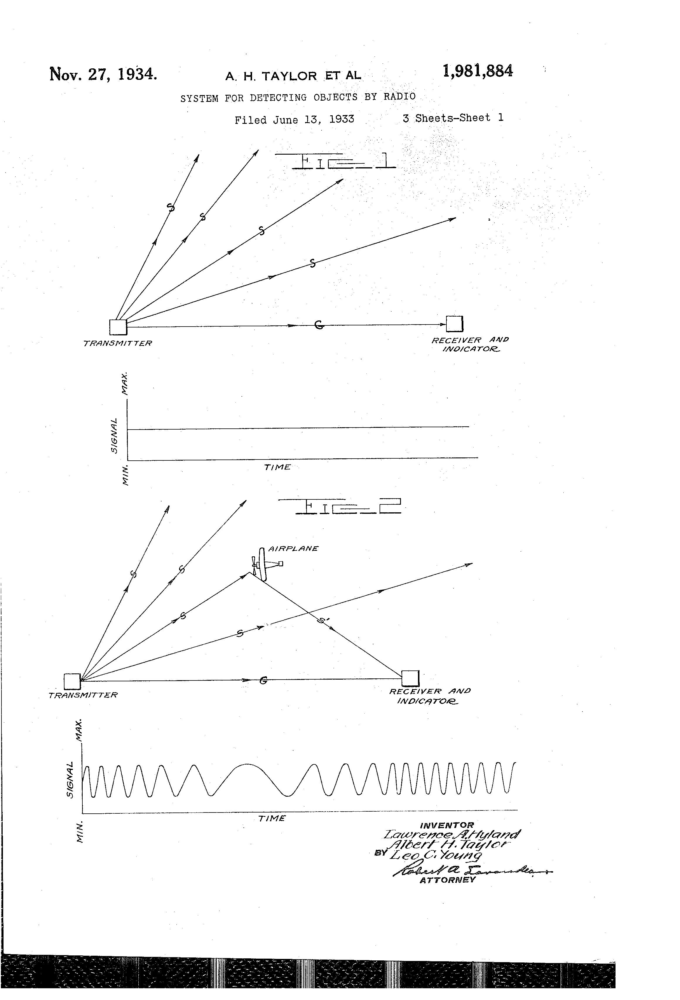

Research
Our process paper and annotated bibliography are below.


Process Paper
The process paper has not been added to this draft yet.
Annotated Bibliography
Primary Sources
DeWitt, John H. “Radio to the Moon.” Radio Craft 18, no. 7 (April 1946): 464, 501, 502. https://www.rsp-italy.it/Electronics/Magazines/Radio-Craft/_contents/Radio-Craft%201946%2004.pdf#page=22.
This primary article was written by the leader of the team that sent radar signals to the Moon in January 1946. The research uses the account to connect wartime radar work with new uses in space. DeWitt’s description of the test and hopes for communication show how radar’s purpose was expanding after World War II.
Dingle, Herbert. “The Doppler Effect and the Foundations of Physics (I).” The British Journal for the Philosophy of Science 11, no. 41 (1960): 11–31. https://www.jstor.org/stable/685816.
This article examines the Doppler effect and questions about the foundations of physics. The research uses the discussion as scientific background for Doppler radar. The topic helps explain the connection between wave frequency and motion.
McDonald, Joseph P. Sworn statement, December 9, 1941. In Pearl Harbor Attack: Hearings before the Joint Committee on the Investigation of the Pearl Harbor Attack, pt. 18, 3014. Washington, DC: U.S. Government Printing Office, 1946. https://archive.org/details/pearlharborattac18unit/page/3014/mode/1up.
This sworn statement records the warning received by the telephone operator at the aircraft warning center. The research uses the account to trace how the report reached Lieutenant Tyler before the Pearl Harbor attack. The decision described in the statement shows why detecting planes did not always lead to action.
Taylor, Albert H., Leo C. Young, and Lawrence A. Hyland. “System for Detecting Objects by Radio.” U.S. patent 1,981,884, filed June 13, 1933, and issued November 27, 1934. https://patents.google.com/patent/US1981884A/en.
The inventors’ patent describes an early system for detecting aircraft and ships with radio signals. The research uses the design to explain radar’s development before World War II. The proposed use for scouting at night shows why the military was interested in radio detection.
Tyler, Kermit A. “Statement of Lieut. Kermit A. Tyler.” December 20, 1941. In Pearl Harbor Attack: Hearings before the Joint Committee on the Investigation of the Pearl Harbor Attack, pt. 18, 3015. Washington, DC: U.S. Government Printing Office, 1946. https://archive.org/details/pearlharborattac18unit/page/3015/mode/1up.
This statement gives the duty officer’s explanation for dismissing the report of approaching planes. The research uses the account to explain why friendly aircraft were suspected before the Pearl Harbor attack. Comparing this statement with McDonald’s account shows how judgment and communication affected radar’s usefulness.
Secondary Sources
Bell, Patrick J. “Scanning the Future of Radar: Next-Gen Uses for a Classic Technology.” MIT Professional Education. June 5, 2019. https://professional.mit.edu/news/articles/scanning-future-radar-next-gen-uses-classic-technology.
This article describes modern uses of radar in cars, aircraft, and other fields. The research uses the examples to explain radar’s lasting impact after World War II. The examples show how radar can improve navigation and safety.
“The Birth of Radar and the Second World War.” Radar Museum. Accessed October 7, 2026. https://www.radarmuseum.co.uk/history/world-war-two/.
This museum article traces early warning systems from sound detectors to British radar stations. The research uses the account to explain the experiments that led to the Chain Home system. The timeline shows how Britain built a warning network before World War II.
Connor, Roger. “Radar Charts from the Bombing of Dresden.” National Air and Space Museum, October 24, 2013. https://airandspace.si.edu/stories/editorial/radar-charts-bombing-dresden.
This article examines a radar chart connected to the bombing of Dresden. The research uses the chart and explanation to study radar navigation during World War II. The account shows both the usefulness and limits of radar during military operations.
Dave, Will. “1940s: The Cavity Magnetron.” Science Museum Blog. March 18, 2013. https://blog.sciencemuseum.org.uk/1940s-the-cavity-magnetron/.
This article explains how the cavity magnetron improved radar during World War II. The research uses the article to connect British inventions and American production with radar carried by aircraft. The discussion of microwave ovens shows how wartime technology later became part of everyday life.
Fisher, Bob. “Real-World Applications of Passive Radar.” Lehigh University. April 5, 2017. https://news.lehigh.edu/real-world-applications-of-passive-radar.
This article explains passive radar, which uses radio signals already present in the environment. The research uses the examples to describe possible uses in cars and security systems. The discussion shows how researchers continue to develop new uses for radar.
Glueckstein, Fred. “‘An Extraordinary Advantage’: Winston Churchill, Robert Watson-Watt and the Development of Radar.” International Churchill Society. November 23, 2022. https://winstonchurchill.org/publications/finest-hour/finest-hour-195/an-extraordinary-advantagewinston-churchill-robert-watson-watt-and-the-development-of-radar/.
This article explains the development of British radar and Churchill’s support for air defense. The research uses the account to connect scientific work with decisions made by national leaders. The discussion helps explain why radar became important to Britain during World War II.
“The History of Radar.” Spartan College of Aeronautics and Technology. Accessed September 8, 2026. https://www.spartan.edu/news/the-history-of-radar/.
This article gives an overview of radar’s development and its military and civilian uses. The research uses the timeline to organize the main stages of radar history. The overview helps connect early discoveries about radio waves with later uses of radar.
“How Do Radars Work?” Lockheed Martin. Accessed October 7, 2026. https://www.lockheedmartin.com/en-us/news/features/2021/how-do-radars-work.html.
This article explains the main parts of a radar system and how the parts work together. The research uses the explanation to describe how radar sends and receives signals. The basic overview makes the science behind radar easier to explain.
“How Radar Works.” National Oceanic and Atmospheric Administration. Accessed September 9, 2026. https://www.noaa.gov/jetstream/doppler/how-radar-works.
This article explains how radar sends radio pulses and receives signals that return from objects. The research uses the explanation to describe how radar measures distance and motion. The discussion of Doppler radar helps explain how weather radars track movement within storms.
Lorber, Azriel. “Technological Intelligence and the Radar War in World War II.” Royal Canadian Air Force Journal 5, no. 1 (2016): 52–65. https://www.canada.ca/en/air-force/corporate/reports-publications/royal-canadian-air-force-journal/-vol5-iss1-07-technological-intelligence-and-the-radar-war-in-world-war-ii.html.
This article examines radar technology and military intelligence during World War II. The research uses the examples to compare how countries developed and responded to radar. The account helps explain how scientific knowledge could give a military advantage.
MIT Lincoln Laboratory. “MIT Radiation Laboratory.” Accessed October 22, 2026. https://www.ll.mit.edu/about/history/mit-radiation-laboratory.
This article describes MIT’s radar research during World War II. The research uses examples of British and American cooperation to explain how radar systems improved during the war. The discussion of submarine detection shows how radar helped protect Allied ships and supplies.
National Park Service. “Opana Radar Site.” Last modified August 15, 2019. https://www.nps.gov/articles/opana-radar-site.htm.
This article describes the radar warning before the attack on Pearl Harbor. The research uses the account to explain how a report of approaching planes was mistaken for expected American bombers. The missed warning shows that radar’s success depended on clear communication and correct decisions.
National Weather Service. “Radar.” Accessed October 22, 2026. https://www.weather.gov/about/radar.
This article traces the development of weather radar from unexpected rain echoes to modern storm tracking. The research uses the article to explain radar’s role in weather forecasting beyond military use. The explanation of wind movement and storm rotation shows how radar improved severe weather warnings.
Parry, Daniel. “NRL History: RADAR.” U.S. Naval Research Laboratory. November 4, 2010. https://www.nrl.navy.mil/Media/News/Article/2577147/nrl-history-radar/.
This article describes radar research carried out by the United States Navy. The research uses the account to explain the American side of radar’s development. The history connects laboratory work with radar’s growing role in military defense.
Royal Air Force Museum. “How Radar Works.” Accessed October 22, 2026. https://www.rafmuseum.org.uk/research/online-exhibitions/history-of-the-battle-of-britain/how-radar-works/.
This article explains how British radar located aircraft and sent information through the Dowding System. The research uses the article to describe how radar stations, ground observers, and fighter units worked together. The explanation shows why communication was an important part of Britain’s air defense.
“This Month in Physics History: April 1935: British Patent for Radar System for Air Defense Granted to Robert Watson-Watt.” APS News. April 1, 2006. https://www.aps.org/apsnews/2006/04/this-month-in-physics-history.
This article explains the development of practical radar for British air defense. The research uses the account to connect early radio experiments with a working detection system. The history helps explain how scientific discoveries became useful before World War II.